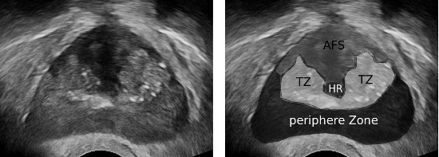
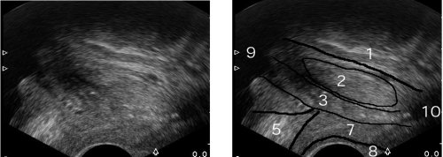
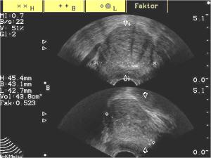

You are here: Urology Textbook > Urologic examinations > Imaging > TRUS
Transrectal Ultrasonography (TRUS) of the Prostate
Transrectal ultrasound (TRUS) is used for imaging of pelvic organs, especially the prostate, seminal vesicles and membranous urethra. The examination is indicated for the determination of the size and anatomy of the prostate, in case of abnormal digital rectal palpation, increased PSA concentration, prostatitis with suspected abscess, chronic pelvic pain, unexplained LUTS, hemospermia, azoospermia or severe OAT syndrome, planning prostate surgery, targeting prostate biopsy or draining prostate abscess.
Examination Technique
Transrectal probe:
Modern probes consist of fixed transducers, eliminating the need for mechanical rotation of the transducer. This also allows the simultaneous display of a transversal and sagittal plane. The probe frequency is usually 7.5–10 MHz, which allows a good resolution in 1–4 cm distance.
Bowel preparation:
Bowel preparation is not usually performed, ideally is the rectum is emptied before the examination.
Patient position:
The examination can be performed in a (left) lateral decubitus position with knees and hips flexed 90 degrees or in a lithotomy position.
Normal Findings
Echo architecture:
The prostate is examined in transversal and sagittal planes. In young men, the central zone and peripheral zone of the prostate present with homogeneous echo. The transitional zone is separated with a hypoechoic border from the peripheral zone. With increasing age, the transitional zone increases and presents with inhomogenous echo architecture. Prostate calcification may be found in the transitional zone and at the border to the peripherial zone [fig. \ref{trus_transversal1} and \ref{trus_sagittal}].
|  |
|  |
|  |
Volume calculation:
The shape of the prostate under 80 ml is similar to an ellipsoid. Prostate length is measured in the sagittal plane, width and height are measured in the transverse plane [fig. \ref{TRUS_Prostatavolumen1}]. Prostate volume is calculated with the help of the following formula, the factor π/6 is about 0.52:
prostate volume =length × width × height × π/6
Since the exact length of the prostate is often difficult to measure for technical reasons, it does not contribute to the accuracy of the volume measurement. The approximation of prostate volume using width and height in the transversal plane using the following formula has also proven reasonable accurate:
prostate volume = height × width × width × π/6
The prostate with a volume over 80 ml is more like a sphere than an ellipsoid. The calculation can then be made according to the following formula using the maximum width of the prostate in the transversal plane:
prostate volume = width × width × width × π/6
The most accurate determination of the prostate volume is possible with the planimetry. The ultrasound probe is mounted on a tripod, the probe passes through the prostate from base to apex. Every 5 mm the area of the prostate is measured in the transversal plane. The prostate volume is calculated from the sum of the cross-sectional areas. The disadvantage of this method is the time required for the measurement, nevertheless, planimetry is used for planning brachytherapy of the prostate.
| Penis ultrasound | Index | TRUS |
Index: 1–9 A B C D E F G H I J K L M N O P Q R S T U V W X Y Z
References
- Singer u.a. 2006 SINGER, Eric A. ; GOLIJANIN, Dragan J. ; DAVIS, Robert S. ; DOGRA, Vikram:
- What’s new in urologic ultrasound?
In: Urol Clin North Am
33 (2006), Aug, Nr. 3, S. 279–286
 Deutsche Version: TRUS Prostata Sonographie
Deutsche Version: TRUS Prostata Sonographie